기계정비산업기사 (2004-08-08 기출문제)
1과목: 공유압 및 자동화시스템
1. 다음 기호의 명칭으로 옳은 것은?
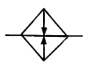
- 냉각기
- 가열기
- 온도 조절기
- 압력 계측기
(정답률: 81%)

2. 기기, 장치의 특성, 작동 등을 기호로 표시할 때 사용하는 기본적인 선 또는 도형을 나타내는 용어는?
- 기호 요소
- 기능 요소
- 조작 요소
- 가변 요소
(정답률: 45%)
3. 공압 모터의 특징으로 적합한 것은?
- 공기의 압축성에 의해 제어성이 뛰어나다.
- 과부하시 조금도 위험성이 없다.
- 에너지 변환 효율이 매우 높다.
- 배기음이 거의 없어 조용하다.
(정답률: 42%)
4. 공기 압축기는 변동하는 수요에 공급량을 맞추기 위해 압력조절이 필요하다. 조절 방법에는 여러 가지 방법이 있는데 다음 중 무부하 조절에 해당하지 않는 것은?
- 배기 조절
- 흡입량 조절
- 차단 조절
- 그립-암(grip-arm) 조절
(정답률: 35%)
5. 제어 시스템의 AND 논리를 잘못 표현한 것은?
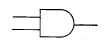
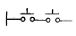
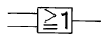
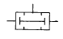
(정답률: 61%)
6. 유압 실린더 행정 중 임의의 위치에서 피스톤을 고정시킬 경우에 피스톤의 이동을 방지하는 회로를 고정 회로 (locking circuit)라 한다. 이 회로에 사용되는 밸브로 적합한 것은?
- 압력 시퀀스 밸브
- 파일럿 조작 체크 밸브
- 급속 배기 밸브
- 일방향 유량제어 밸브
(정답률: 53%)
7. 다음 그림은 동조회로이다. 어떤 방식인가?
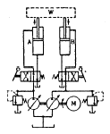
- 교축 방식
- 래크 방식
- 2펌프 방식
- 유압모터 방식
(정답률: 68%)
8. 그림에서 A측에 압력 50 kg/cm2의 유압유를 매분당 12 ℓ씩 보낼 때 그 동력은?
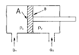
- 150 kg-m/s
- 100 kg-m/s
- 50 kg-m/s
- 10 kg-m/s
(정답률: 48%)
9. 용량이 같은 단단 펌프 2개를 1개의 본체 내에 직렬로 연결시킨 것이며, 고압이므로 대출력이 요구되는 곳에 적합한 펌프는?
- 단연 베인 펌프
- 단단 베인 펌프
- 2단 베인 펌프
- 2연 베인 펌프
(정답률: 62%)
10. 공기압 실린더의 부착 방식이 아닌 것은?
- 풋트형
- 플랜지형
- 클래비스형
- 용접형
(정답률: 74%)
11. 입력과 출력이 1:1 대응관계에 있는 시스템으로 일명 논리제어라고 하는 제어방식은?
- 조합제어
- 시퀀스제어
- 파일럿제어
- 시간에 따른 제어
(정답률: 47%)
12. 회전체의 회전 속도를 검출할 수 있는 로터리 엔코더의 취급시 주의 사항이 아닌 것은?
- 떨어뜨리거나 무리한 충격을 가해서는 안된다.
- 체인, 타이밍 벨트 및 톱니바퀴와 결합하는 경우는 커플링을 사용하여야 한다.
- 커플링의 결합시 회전축간의 결합 오차(편심, 편각)는 어느 정도 있어야 한다.
- 엔코더 케이블의 실드(차폐)선은 0V에 접속하거나 접지시켜야 한다.
(정답률: 70%)
13. 2종류의 금속선의 한 끝을 접합하면 개방된 따른 끝에는 접합부와의 온도차이에 따라 기전력이 발생하는 원리를 이용하여 온도를 측정하는 센서는 어느 것인가?
- 열전대
- 서미스터
- 측온저항체
- 탄성 표면파 온도센서
(정답률: 52%)
14. 전기 시스템에서 전동기 저속회전의 원인이 되는 것은?
- 권선의 접지
- 과부하
- 단상운전
- 퓨즈의 단락
(정답률: 38%)
15. 다음 그림의 회로명칭은?
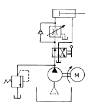
- 미터 - 인 회로
- 미터 - 아웃 회로
- 블리드 - 오픈 회로
- 블리드 - 온 회로
(정답률: 74%)
16. 다음 중 온도 센서가 아닌 것은?
- 열전쌍(Thermocouple)
- 서미스터(Thermistor)
- 측온 저항체
- 홀 소자
(정답률: 82%)
17. 산업용 로봇의 관절 기구 같은 부분에 주로 사용되고 있는 모터는?
- DC 모터
- AC 모터
- 스테핑 모터
- 리니어 모터
(정답률: 46%)
18. 메모리 기능이 없고 여러 입· 출력 요소가 있을 때는 논리적인 해결을 위해 부울 대수가 이용되므로 논리제어라고도 하는 것은?
- 메모리 제어
- 파일럿 제어
- 시퀀스 제어
- 시간종속 시퀀스 제어
(정답률: 69%)
19. 전 단계의 작업완료 여부를 리밋 스위치 또는 센서를 이용하여 확인한 후 다음 단계의 작업을 수행하는 것으로서 공장 자동화에 가장 많이 이용되는 제어방법은?
- 메모리 제어
- 시퀀스 제어
- 파일럿 제어
- 시간에 따른 제어
(정답률: 78%)
20. 스테핑 전동기는 1개의 펄스를 부여하면 정해진 각도만큼 회전하며 이 각도를 스텝각이라 한다. 다음 그림과 같이 극수가 8, 회전자의 치수가 6인 4상 스테핑 전동기의 스텝각은 얼마인가?
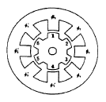
- 10°
- 15°
- 20°
- 25°
(정답률: 60%)
2과목: 설비진단관리 및 기계정비
21. 구조물의 공진을 피하기 위하여 고유진동수를 낮추고자 할 때 올바른 방법은?
- 구조물의 강성을 작게 하고 질량을 크게 한다.
- 구조물의 강성을 크게 하고 질량을 줄인다.
- 구조물의 강성과 질량을 줄인다.
- 구조물의 강성과 질량을 최대한 크게 한다.
(정답률: 39%)
22. 실효값은 피크값의 몇 배인가?
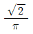
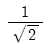
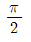
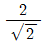
(정답률: 65%)
23. 회전기계장치에서 회전수와 동일한 주파수가 검출되었을 때 진동을 발생시키는 주 원인은?
- 언밸런스
- 풀림
- 오일 휩
- 케비테이션
(정답률: 57%)
24. 라인별 배치라고도하며 공정에 따라 필요한 기계가 배치되고 대량생산에 적합한 설비배치는?
- 기능별 배치
- 제품별 배치
- 제품 고정형 배치
- 혼합별 배치
(정답률: 68%)
25. 공장의 보전요원을 각 제조부문의 감독자 밑에 배치하는 보전 방식은?
- 집중보전(central maintenance)
- 지역보전(area maintenance)
- 부분보전(departmental maintenance)
- 절충보전(combination maintenance)
(정답률: 55%)
26. 전기절연유에 속하지 않는 것은?
- 돈유
- 합성유
- 알킬벤젠유
- 광유
(정답률: 46%)
27. 마이크로미터를 사용할 때 일반적인 주의사항에 해당되지 않는 것은?
- 최소측정값, 측정범위를 고려하여 선택할 것
- 사용전에 반드시 영점 조정을 할 것
- 보관시 앤빌과 스핀들의 양 측정면을 밀착시킬 것
- 온도에 의한 오차에 주의할 것
(정답률: 57%)
28. 볼트와 너트의 풀림 방지법으로 알맞은 것은?
- 캡 너트를 사용한다.
- 로크 너트를 사용한다.
- 볼트를 볼트 구멍에 억지끼움한다.
- 볼트의 규격보다 작은 너트를 사용한다.
(정답률: 72%)
29. 베어링을 열박음 할 때의 적절한 온도는?
- 50℃
- 100℃
- 150℃
- 200℃
(정답률: 66%)
30. 정비계획 수립시 고려할 사항이 아닌 것은?
- 생산계획 확인
- 설비능력 파악
- 제품성분 분석
- 수리요원
(정답률: 55%)
31. 송풍기 축의 온도상승에 의한 신장에 대한 대책은?
- 전동기측이 신장되도록 한다.
- 반전동기측이 신장되도록 한다.
- 양쪽이 모두 신장되도록 한다.
- 신장되지 못하도록 제한한다.
(정답률: 37%)
32. 설비보전조직의 기본형 중 부분보전의 장점에 해당하는 것은?
- 생산계획을 우선하여 보전작업이 무시될 수 있다.
- 보전작업의 계획이 생산할당에 따라 책임을 져야 할 관리자에 의해 세워진다.
- 공장의 보전책임이 분할된다.
- 고장시 충분한 보전요원을 동원할 수 있다.
(정답률: 34%)
33. 고장율을 λ (t)로 하고 설비의 사용 시간을 t로 했을 때 고장율이 증가하는 것은 어느 것인가?
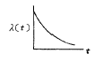
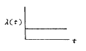
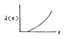
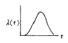
(정답률: 73%)
34. 1 m에 대하여 감도 0.⑤ mm의 수준기로 길이 3m의 베드의 수평도를 검사시 오른쪽으로 3눈금 움직였다면 이 때 베드의 기울기는 얼마인가?
- 오른쪽이 0.15 mm 높다.
- 왼쪽이 0.3 mm 높다.
- 오른쪽이 0.45 mm 높다.
- 왼쪽이 0.75 mm 높다.
(정답률: 51%)
35. 상온에서 유동적인 접착성 물질로서 바른 후 일정시간 경과하면 건조되어 누설을 방지하는 가스켓은?
- 고무 가스켓
- 석면 가스켓
- 접착 가스켓
- 액상 가스켓
(정답률: 74%)
36. 마이크로미터의 나사의 피치가 p[mm], 나사의 회전각이 α [rad]일 때, 스핀들의 이동거리 x[mm]는?
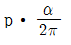
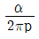
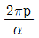
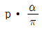
(정답률: 34%)
37. 축의 중심부 구멍에 유압펌프를 접속하고 끼워 맞춤부에 높은 유압을 걸어 그 반작용에 의해서 베어링의 내륜을 빼내는 방법은?
- 센터링
- 드레인
- 스트레이너
- 오일 인젝션
(정답률: 46%)
38. 설비관리의 시스템을 구성하는 기본적 요소 중 기계장치나 설비에 해당하는 것은?
- 투입
- 처리기구
- 관리
- 피드백
(정답률: 62%)
39. 축이 마모되어 수리할 때 보스에 부시를 넣어야 하는 경우는?
- 마모부분 다시 깍기
- 마모부에 금속 용사하기
- 마모부에 살 더하기 용접하기
- 마모부를 잘라 맞춰 용접하기
(정답률: 58%)
40. 진동 차단기로서 갖추어야 할 요건으로 옳은 것은?
- 화학적 변화에 따라 변형되어야 한다.
- 차단하려는 진동의 최저 주파수보다 큰 고유진동수를 가져야 한다.
- 온도, 습도에 견딜 수 있어야 한다.
- 강성은 충분히 커야 하고 하중은 고려하지 않는다.
(정답률: 55%)
3과목: 공업계측 및 전기전자제어
41. 직류 발전기에서 독립된 전원으로 계자권선을 여자시키는 발전기는?
- 직류 발전기
- 타여자 발전기
- 분권 발전기
- 복권 발전기
(정답률: 72%)
42. 서로 다른 두 종류의 금속을 접합하여 온도의 차를 주면 회로내에 열기전력이 발생하는 것을 제벡효과라 한다. 제벡효과와 관련이 없는 것은?
- 도전률
- 열전쌍
- 구리 - 콘스탄탄
- 크로멜 - 알루멜
(정답률: 43%)
43. 미세한 측정 조건의 변동으로 인한 오차는?
- 과실오차
- 환경오차
- 개인오차
- 계기오차
(정답률: 56%)
44. 두 코일의 자체 인덕턴스를 L1, L2 결합계수를 K라 할 때 상호 인덕턴스는 어떻게 나타내는가?


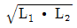
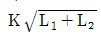
(정답률: 51%)
45. 동기 전동기에 제동권선을 설치하는 이유는?
- 역률조정
- 난조방지
- 손실감소
- 고조파 발생방지
(정답률: 25%)
46. 다음 사이리스터 중에서 단방향성 소자는 어느 것인가?
- 트라이액(TRIAC)
- 다이액(DIAC)
- SSS
- SCR
(정답률: 54%)
47. 다음 보드선도의 이득 특성곡선은 어떤 제어기에 해당되는가?
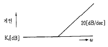
- 비례제어
- 비례적분제어
- 비례미분제어
- 비례미분적분제어
(정답률: 34%)
48. 플립 플롭회로는 다음 중 어느 회로에 해당하는가?
- 쌍안정 멀티 바이브레이터
- 비안정 멀티 바이브레이터
- 단안정 멀티 바이브레이터
- 블로킹 발진회로
(정답률: 63%)
49. 다음 중 무효전력의 단위는?
- [W]
- [J]
- [Var]
- [VA]
(정답률: 52%)
50. 계기상수 2400[rev/kwh]의 적산 전력계가 30초에 20회전 했을 때의 전력 [W]은?
- 100
- 200
- 1000
- 2000
(정답률: 28%)
51. 제어밸브를 밸브시트의 형태에 따라 분류한 것으로 틀린 것은?
- 앵글 밸브
- 공기압식 제어밸브
- 게이트 밸브
- 글로브 밸브
(정답률: 67%)
52. 다음 중 조작기기의 요소가 구비해야 할 조건이 아닌 것은?
- 신뢰성이 높고 보수가 용이할 것
- 요소에 가해지는 반력에 대하여 동작하는 조작력이 있을 것
- 동작범위, 특성 및 크기가 적당할 것
- 움직이는 부분의 이력현상(hysterisis)이 있고 반응 속도가 빠를 것
(정답률: 56%)
53. 그림의 래더 다이어그램(ladder diagram)을 PLC 프로그램 할 때 최소의 스텝수는?
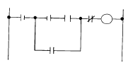
- 6
- 8
- 10
- 12
(정답률: 51%)
54. PLC의 구성 중 입력(input)측에 해당되지 않는 것은？
- 센서(sensor)
- 입력 스위치
- 열동 과전류 계전기의 접점
- 벨(bell)
(정답률: 49%)
55. 다음 중 물리적, 화학적인 양을 전기적인 양으로 변환하는 방법으로서 시간 변환에 해당하는 것은?
- 전기저항의 온도계수를 이용하는 저항 온도계
- 주파수나 펄스 간격 등으로 변환하는 방법으로 원격 측정
- 저항 측정에 의한 고장 점의 검출
- 열전 온도계와 같이 전압, 전류 등으로 변환하는 것으로 열전현상, 압전현상 등
(정답률: 37%)
56. 다음 그림의 논리회로는?
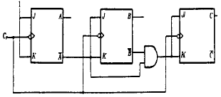
- 동기식 8진 다운 카운터
- 비동기식 8진 다운 카운터
- 동기식 8진 업 카운터
- 비동기식 8진 업 카운터
(정답률: 32%)
57. 제어량이 온도, 압력, 유량 및 액면 등과 같은 일반 공업량일 때의 제어방식을 무엇이라고 하는가?
- 프로그램제어
- 프로세스제어
- 시퀀스제어
- 추종제어
(정답률: 53%)
58. 다음 그림에서 연산 증폭기의 출력 전압은？ (단, R1 = R2 , RF = RD 이다.)
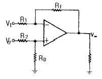
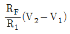
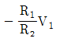
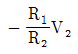
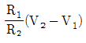
(정답률: 26%)
59. 프로세스 제어시스템에서 신호 전송라인에 노이즈(noise)가 발생하는 원인이 아닌 것은?
- 전하
- 중첩
- 정전유도
- 전자유도
(정답률: 43%)
60. 750 rpm, 극수 8인 3상 동기 전동기의 주파수는 몇 Hz인가?
- 50
- 60
- 70
- 80
(정답률: 32%)
4과목: 기계정비 일반
61. 스프링의 탄성변형에 의해 저장되는 에너지 U 를 계산하는 식으로 잘못된 것은? (단, T = 비틀림모멘트, θ = 비틀림각(rad), k = 스프링상수, δ= 스프링변형량(mm), P = 하중(kgf))
- U = (1/2) Pδ
- U = (1/2) K δ2
- U =(1/2) Pδ2
- U = (1/2) T θ
(정답률: 41%)
62. 고속도강(high speed steel)의 기본 성분에 속하지 않는 원소는?
- Ni
- Cr
- W
- V
(정답률: 39%)
63. 그림과 같은 T형 용접이음에서 허용전단응력이 8 ㎏f/mm2일 때, 용접길이 L 은 얼마 정도인가?
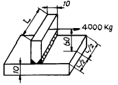
- L = 50 mm
- L = 60 mm
- L = 180 mm
- L = 190 mm
(정답률: 32%)
64. 모듈 m = 5, 중심거리 C = 225 mm, 속도비가 1 : 2 인 한쌍의 스퍼 기어의 잇수는 각각 몇 개인가?
- 35, 70
- 40, 80
- 25, 50
- 30, 60
(정답률: 26%)
65. 알루미늄(Al)합금의 특징 설명으로 틀린 것은?
- 가볍고 전연성이 좋아 성형 가공이 용이하다.
- 우수한 전기 및 열의 양도체이다.
- 용융점이 1083℃로 고온가공성이 높다.
- 대기 중에서는 일반적으로 내식성이 양호하다.
(정답률: 50%)
66. Fe-C 상태도에서 공정점의 자유도(degree of freedom)는 얼마인가?
- 0
- 1
- 2
- 3
(정답률: 28%)
67. 롤러 체인에서 스프로킷의 잇수 60, 체인의 피치 1 cm, 스프로킷의 회전수 100 rpm 일 때, 체인의 평균속도는?
- 8 m/s
- 16 m/s
- 5 m/s
- 1 m/s
(정답률: 22%)
68. 용접이음이 리벳 이음보다 우수한 점으로 해당되지 않는 것은?
- 이음 효율이 높다.
- 중량의 경감과 재료 절감이 가능하다.
- 대형가공기계가 필요하지 않고, 공작이 용이하다.
- 변형이 되지 않고, 잔류응력이 생기지 않는다.
(정답률: 47%)
69. 미끄럼을 방지하기 위하여 접촉면에 치형을 붙여, 맞물림에 의하여 전동하도록 조합한 벨트는?
- 가죽벨트
- 고무벨트
- 강 벨 트
- 타이밍벨트
(정답률: 50%)
70. 철-콘스탄탄 열전대에 대한 설명 중 잘못된 것은?
- ＋측 재료는 순철이다
- －측 재료는 니켈 90 ％, 크롬 10 %이다
- 사용온도는 약 600℃ 정도이다
- 측정온도 범위에 따라 보정이 필요하다
(정답률: 40%)
71. 열간가공이 쉽고 다듬질 표면이 아름답고, 특히 용접성이 좋고 고온강도가 큰 장점이 있는 합금강은?
- Ni-Cr강
- Mn-Mo강
- Cr-Mo강
- W-Cr강
(정답률: 23%)
72. 반복 하중을 가하여 재료의 강도를 평가하는 시험 방법은 다음 중 어느 것인가?
- 충격시험
- 인장시험
- 굽힘시험
- 피로시험
(정답률: 49%)
73. 고 Cr강에서 가장 주의해야할 취성은?
- 800℃취성
- 650℃취성
- 475℃취성
- 25℃취성
(정답률: 25%)
74. 일반적으로 침탄에 사용되는 탄소강의 탄소함량의 범위로 가장 적합한 것은?
- 0.1 ∼ 0.2 %
- 0.5 ∼ 0.7 %
- 0.8 ∼ 0.9 %
- 1.2 ∼ 1.5 %
(정답률: 29%)
75. 코터이음에서 2000 ㎏f 의 인장력이 작용한다. 이 때 코터의 폭이 90 mm, 두께가 60 mm 인 경우 코터가 받는 전단응력은 얼마인가?
- 0.185 ㎏f/cm2
- 18.5 ㎏f/cm2
- 29.5 ㎏f/cm2
- 37.0 ㎏f/cm2
(정답률: 35%)
76. 구형 피벗(pivot)이 있고, 이것을 지점으로 해서 경사 할수 있으므로 플랜지와 패드의 표면에 쐐기형 유막이 생기며, 일명 킹스베리 베어링 이라고도 부르는 베어링은?
- 자동조절베어링
- 미첼베어링
- 구면베어링
- 칼러베어링
(정답률: 33%)
77. 밴드 브레이크의 긴장측 장력 814 ㎏f, 두께 2 mm, 허용응력 8 ㎏f/mm2일 때 밴드의 폭은? (단, 이음 효율은 100 % 로 한다.)
- 약 40 mm
- 약 51 mm
- 약 60 mm
- 약 71 mm
(정답률: 32%)
78. 다음 중 기계구조용 탄소강은?
- SM20C
- SPC3
- SPN5
- GC20
(정답률: 54%)
79. 무단변속 마찰차가 아닌 것은?
- 원뿔 마찰차
- 구면 마찰차
- 원판 마찰차
- 홈붙이 마찰차
(정답률: 46%)
80. 칠드주철에서 칠(Chill)층의 깊이를 지배하는 요소가 아닌 것은?
- 주입온도
- 주물두께
- 금형온도
- 금형의 경도
(정답률: 29%)